<!-- .slide: data-background="#151522" --> ## Test Driven Development ### (TDD) Una perspectiva que agrada 🚀 <br /> <br /> <div class="logo"> <img src="assets/me.png" class="image-logo rounded"/> </div> <em> Robert Stevens Pineda (stevenscol.co) <!-- .element class="footer" --> </em> --- ### Agenda 1. ¿Por qué probamos el código?<!-- .element class="fragment" --> 2. Pruebas automatizadas<!-- .element class="fragment" --> 3. Test Driven Development<!-- .element class="fragment" --> 4. ¿Por qué TDD?<!-- .element class="fragment" --> 5. Caso práctico de éxito<!-- .element class="fragment" --> 6. Desventajas<!-- .element class="fragment" --> 7. ¿Dónde continuar?<!-- .element class="fragment" --> 8. Taller de TDD<!-- .element class="fragment" --> --- ### 1. ¿Por qué probamos el código? - Nos lo exigen en el proyecto (Coverage) 📊<!-- .element class="fragment" --> - Mejoramiento de la calidad <!-- .element class="fragment" --> - Reducción de bugs 🐞<!-- .element class="fragment" --> - Mantenibilidad (Nuevas características y mejoras) ⛽<!-- .element class="fragment" --> - ... <!-- .element class="fragment" --> - Es nuestra RESPONSABILIDAD y NO debe ser NEGOCIABLE 👀<!-- .element class="fragment" --> --- ### 2. Pruebas automatizadas Código que describe los requerimientos y valida la correctividad de nuestra aplicación. <!-- .element class="fragment" --> --- Pirámide del Testing <div class="image-full-size"> <img src="assets/tdd/piramide-testing.png" /> </div> --- ### 3. Test Driven Development <p class="fragment"> Es una <strong>metodología de desarrollo</strong> cuyo objetivo es escribir primero las pruebas antes que su implentación </p> --- Las 3 leyes del TDD <!-- .element class="fragment" --> 1. No escribir código productivo hasta no tener una prueba que falle <!-- .element class="fragment" --> 2. No escribir más de una prueba unitario suficiente para fallar <!-- .element class="fragment" --> 3. No escribirás más código del necesario para hacer pasar el test <!-- .element class="fragment" --> --- Ciclo del TDD <div class="image-medium-size"> <img src="assets/tdd/tdd.png" /> </div> --- ### 4. ¿Por qué TDD? - Permite descubrir el diseño y comportamiento temprano antes de ser implementado <!-- .element class="fragment" --> - Completitud de los requerimientos <!-- .element class="fragment" --> - Testeabilidad y otros atributos de calidad<!-- .element class="fragment" --> - Complejidad del software (divide y vencerás) <!-- .element class="fragment" --> - El coverage ya no es una métrica de vanidad<!-- .element class="fragment" --> - ...<!-- .element class="fragment" --> --- Coverage 100% <div class="image-medium-size"> <img src="assets/tdd/coverage.png" /> </div> --- aún hay más... --- ### ¿Por qué TDD? - Es una hábilidad muy bien valorada <!-- .element class="fragment" --> - Enseña a construir mejores pruebas de código<!-- .element class="fragment" --> - Facilita la enseñanza en el desarrollo de software<!-- .element class="fragment" --> --- ### 5. Caso práctico de éxito <div class="logo"> 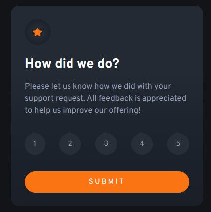 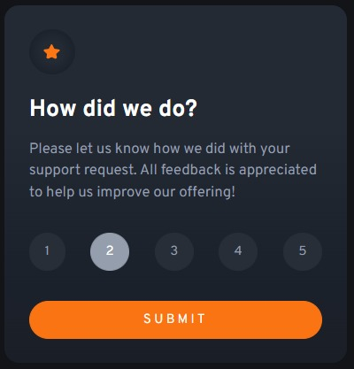 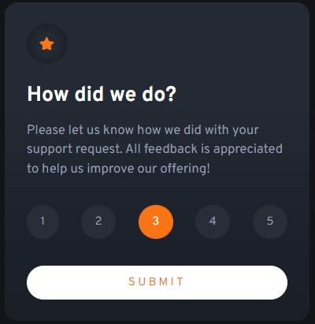 </div> <em>Componente desarrollado por Alejandra utilizando TDD</em> <div> <em> <a href="https://github.com/alealrom/interactive-rating-component">Repo</a> - <a href="https://alealrom.github.io/interactive-rating-component/">Demo</a> </em> </div> --- <div class="image-full-size"> <img src="assets/tdd/approve.gif" /> </div> --- ### 6. Desventajas - No es una bala de plata <!-- .element class="fragment" --> - Curva de aprendizaje y adaptación <!-- .element class="fragment" --> - Mayor esfuerzo <!-- .element class="fragment" --> --- ### 7. ¿Dónde continuar? - Test Driven Development: By Example, Kent Beck (Libro) <!-- .element class="fragment" --> - Learn TDD (GitHub) <!-- .element class="fragment" --> https://github.com/dwyl/learn-tdd <!-- .element class="fragment" --> - Mi Canal de Youtube <!-- .element class="fragment" --> https://youtube.com/c/ScolDev/videos <!-- .element class="fragment" --> - Talleres TDD <!-- .element class="fragment" --> - Como este https://gitlab.com/Pragma_Capacidad/taller-tdd-tic-tac-toe <!-- .element class="fragment" --> --- <!-- .slide: data-background="#151522" --> ## 8. Taller TDD Tic-Tac-Toe <img src="assets/tdd/tic-tac-toe.png" /> --- <!-- .slide: data-background="#151522" --> Requerimientos - Debe permitir jugar a dos jugadores al tic-tac-toe al iniciar la aplicación. - El primer jugador en realizar un movimiento tendrá asignado el simbolo "X" como marcador. - El segundo jugador en realizar un movimiento se le asignara el símbolo "O" como marcador. - El jugador puede elegir una casilla vacia del tablerao para realizar su movimiento --- <!-- .slide: data-background="#151522" --> ToDo - Si al realizar el movimiento del jugador se consigue un 3 en linea con su marcador, el jugador habrá ganado la partida. - Si la partida ha tenido un ganador el juego no deberá permitir ingresar más marcadores hasta que se reinicie el juego. - Si el juego termina en empaté, el juego debera ser reiniciado automaticamente. --- <!-- .slide: data-background="#151522" --> UI - Notificar el resultado del juego en la aplicación (Empata, Jugador 1 Gana, Jugador 2 Gana) - Al terminar un juego con victoria, se resaltarán las casillas victoriosas que cumplan la condición de formar una linea de 3 marcadores iguales. - Habrá un botón que permitirá reiniciar el juego. --- <!-- .slide: data-background="#151522" --> ### Comencemos --- <!-- .slide: data-background="#151522" --> <section class="image-caption"> <img src="assets/tdd/steps/01.png" /> <em>Escribe una prueba que falle</em> </section> --- <!-- .slide: data-background="#151522" --> <section class="image-caption landscape-md"> <img src="assets/tdd/steps/02.png" /> <em>Ejecuta la prueba</em> </section> --- <!-- .slide: data-background="#151522" --> <section class="image-caption"> <img src="assets/tdd/steps/03.png" /> <em>Escribir el código necesario para que pase</em> </section> --- <!-- .slide: data-background="#151522" --> <section class="image-caption landscape-md"> <img src="assets/tdd/steps/04.png" /> <em>La prueba pasa</em> </section> --- <!-- .slide: data-background="#151522" --> <section class="image-caption landscape-md"> <img src="assets/tdd/steps/05.png" /> <em>Escribe una prueba que falle</em> </section> --- <!-- .slide: data-background="#151522" --> <section class="image-caption landscape-md"> <img src="assets/tdd/steps/06.png" /> <em>Ejecuta la prueba</em> </section> --- <!-- .slide: data-background="#151522" --> <section class="image-caption landscape-md"> <img src="assets/tdd/steps/07.png" /> <em>Escribir el código necesario para que pase</em> </section> --- <!-- .slide: data-background="#151522" --> <section class="image-caption landscape-md"> <img class="r-stretch" src="assets/tdd/steps/08.png" /> <em>La prueba pasa</em> </section> --- <!-- .slide: data-background="#151522" --> <section class="image-caption landscape-md"> <img class="r-stretch" src="assets/tdd/steps/09-a.png" /> <img class="r-stretch" src="assets/tdd/steps/09-b.png" /> <em>Escribe una prueba que falle</em> </section> --- <!-- .slide: data-background="#151522" --> <section class="image-caption landscape-md"> <img class="r-stretch" src="assets/tdd/steps/09-c.png" /> <em>Ejecuta la prueba</em> </section> --- <!-- .slide: data-background="#151522" --> <section class="image-caption portrait-lg"> <img class="r-stretch" src="assets/tdd/steps/10.png" /> <em>Escribir el código necesario para que pase</em> </section> --- <!-- .slide: data-background="#151522" --> <section class="image-caption landscape-md"> <img class="r-stretch" src="assets/tdd/steps/11.png" /> <em>La prueba pasa</em> </section> --- <!-- .slide: data-background="#151522" --> <section class="image-caption portrait-lg"> <img class="r-stretch" src="assets/tdd/steps/12.png" /> <em>Refactorización</em> </section> --- <!-- .slide: data-background="#151522" --> <section class="image-caption landscape-md"> <img class="r-stretch" src="assets/tdd/steps/13.png" /> <em>Las pruebas nos protegen</em> </section> --- <!-- .slide: data-background="#151522" --> <section class="image-caption landscape-md"> <img class="r-stretch" src="assets/tdd/steps/14.png" /> <em>Escribe una prueba que falle</em> </section> --- <!-- .slide: data-background="#151522" --> <section class="image-caption landscape-md"> <img class="r-stretch" src="assets/tdd/steps/15.png" /> <em>Escribir el código necesario para que pase</em> </section> --- <!-- .slide: data-background="#151522" --> <section class="image-caption landscape-md"> <img class="r-stretch" src="assets/tdd/steps/16.png" /> <em>La prueba pasa</em> </section> --- <!-- .slide: data-background="#151522" --> <section class="image-caption landscape-md"> 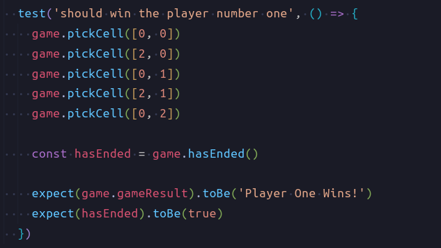 <em>Escribe una prueba que falle</em> </section> --- <!-- .slide: data-background="#151522" --> <section class="image-caption landscape-md"> 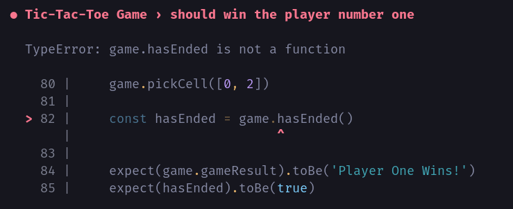 <em>Ejecuta la prueba</em> </section> --- <!-- .slide: data-background="#151522" --> <section class="image-caption landscape-md"> 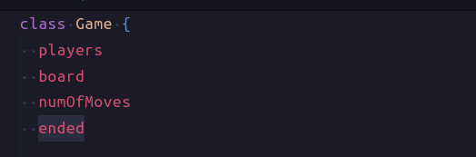 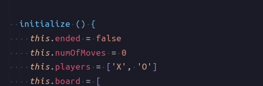 <em>Escribir el código necesario para que pase</em> </section> --- <!-- .slide: data-background="#151522" --> <section class="image-caption portrait-lg"> 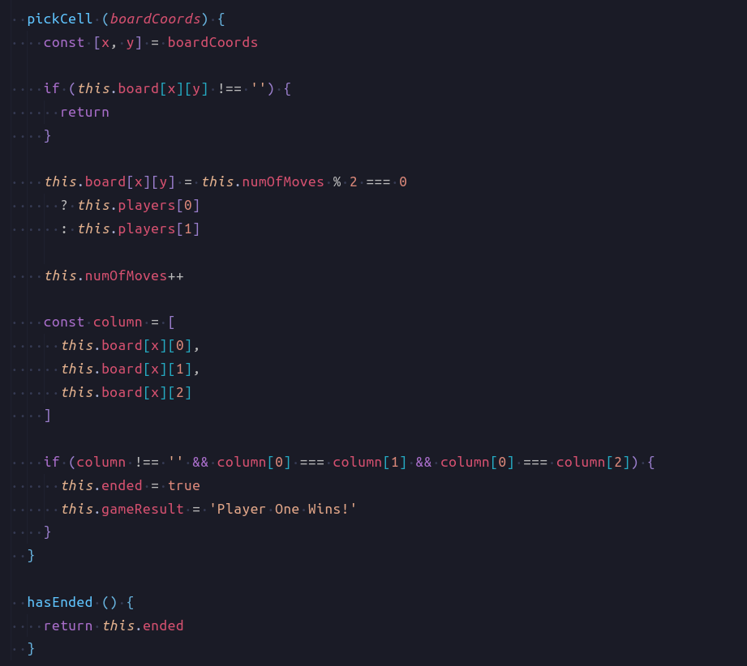 <em>Escribir el código necesario para que pase</em> </section> --- <!-- .slide: data-background="#151522" --> <section class="image-caption landscape-md"> 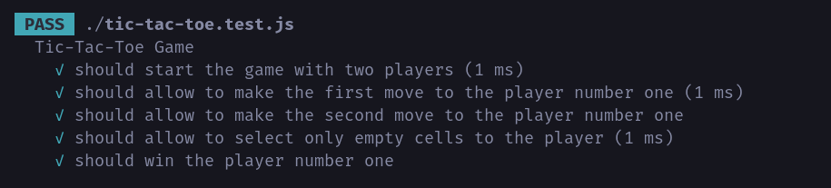 <em>La prueba pasa</em> </section> --- <!-- .slide: data-background="#151522" --> <section class="image-caption portrait-lg"> 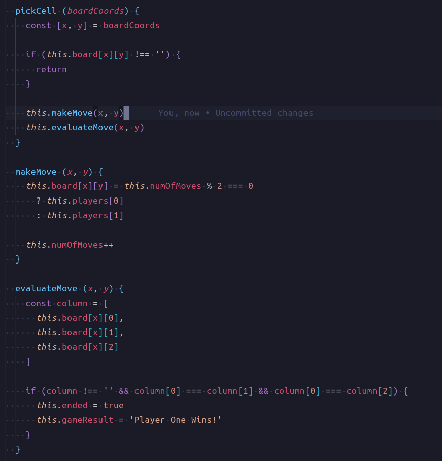 <em>Refactorización</em> </section> --- <!-- .slide: data-background="#151522" --> <section class="image-caption landscape-md"> 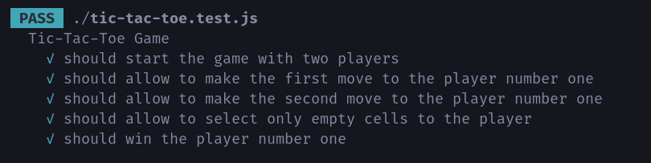 <em>La prueba pasa</em> </section> --- <!-- .slide: data-background="#151522" --> <section class="image-caption landscape-md"> 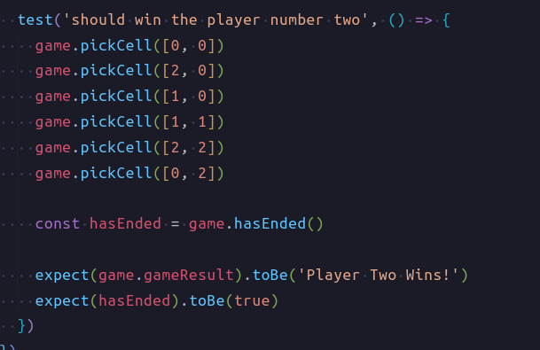 <em>Escribe una prueba que falle</em> </section> --- <!-- .slide: data-background="#151522" --> <section class="image-caption landscape-md"> 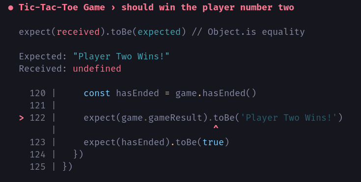 <em>Ejecuta la prueba</em> </section> --- <!-- .slide: data-background="#151522" --> <section class="image-caption portrait-lg"> 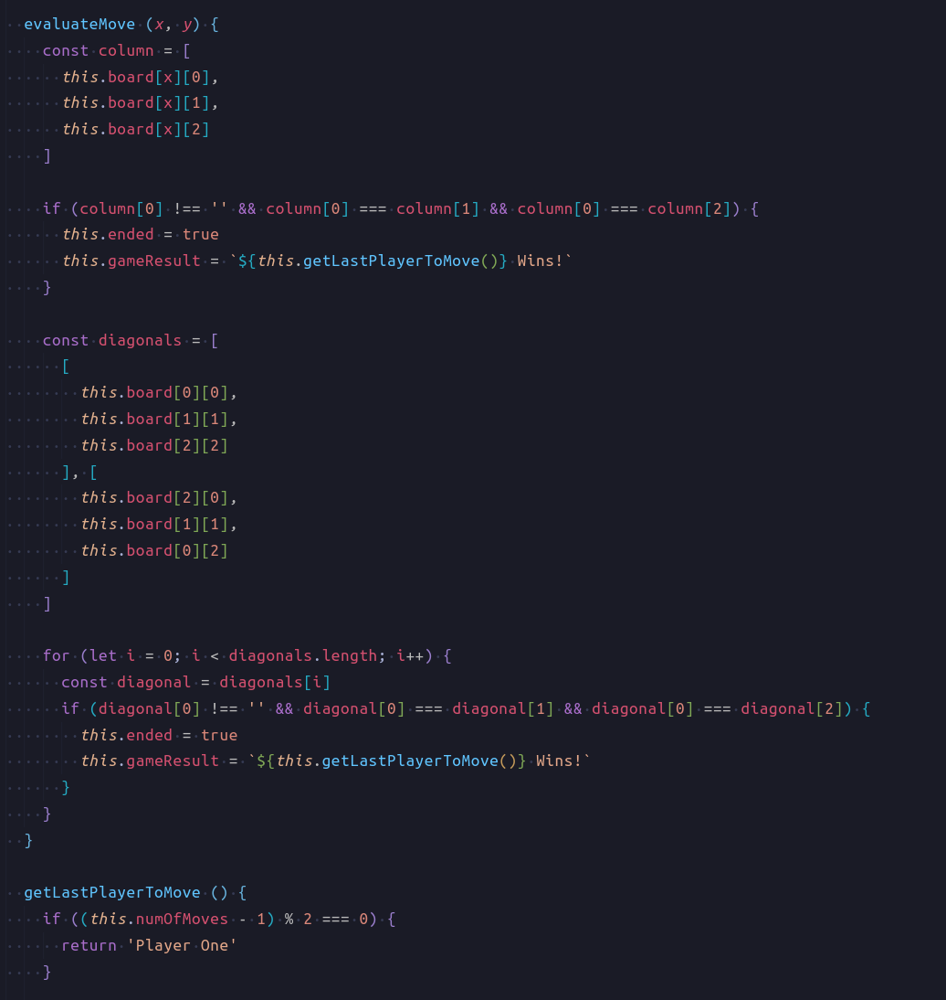 <em>Escribir el código necesario para que pase</em> </section> --- <!-- .slide: data-background="#151522" --> <section class="image-caption portrait-lg"> 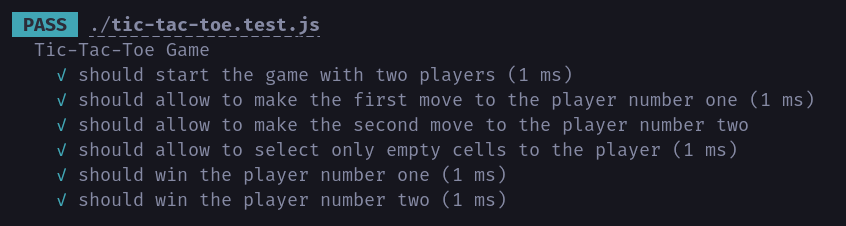 <em>La prueba pasa</em> </section> --- <!-- .slide: data-background="#151522" --> <section class="image-caption landscape-md"> <img class="r-stretch" src="assets/tdd/you.gif" /> <em>¡Ahora es tu turno!</em> </section> --- ¿Preguntas? --- ¡Gracias!